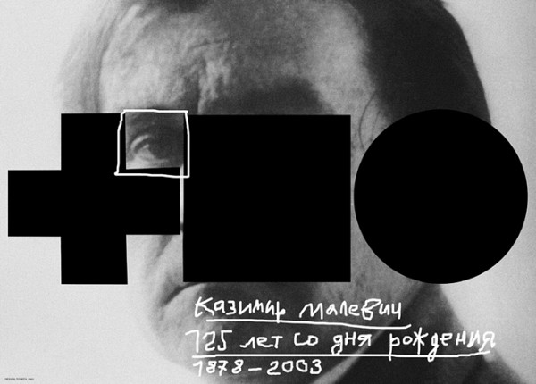
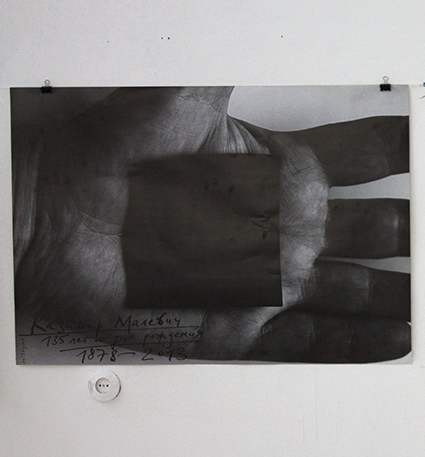

- Постижение мира недоступно художнику, —
- доступно только ощущение его.
- (К.Малевич)
- доступно только ощущение его.
Экспозицию плакатов на темы культуры по праву должны возглавить работы Ю.Тореева, посвящённые Казимиру Великому, как называли его друзья и сподвижники.
Казимир Малевич — вот уже 100 лет это имя живёт в памяти человечества, вызывая у потомков различные чувства: то возмущение и ненависть, то преклонение и восторг. Самое знаменитое произведение Малевича — Черный квадрат — называют «смерть живописи», «дыра в пустоту», «символ конца света», но также: манифест нового искусства, революция в живописи, конец засилья обветшалого академизма и т.д.
По сей день Черный квадрат служит объектом анекдотов и карикатур, злобных выпадов критиков и искусствоведов — от А. Бенуа до М. Кантора.
Однако, при всём обилии критической литературы о Малевиче и его искусстве не заметно, чтобы критики по справедливости оценили героизм художника и его подвижничество, вникли в глубины его мысли и увидели в нём творческую личность — человека, вступившего в борьбу с целым миром и победившего ценой титанических усилий и страданий.
Юрий Тореев взглянул на проблему искусства Малевича с новой точки зрения и создал свою версию его трактовки. Он увидел в художнике человека, он показал Казимира Малевича как пример героического служения искусству — служения, сопряженного с нечеловеческим напряжением сил, страданием, борьбой, самоотверженным трудом (рис. 45a).
45a.
Здесь всё символично и в то же время чувственно-выразительно. Большой красный квадрат — это плита над могилой Художника. Она красная — цвета жизни и крови, отданной на служение Новому искусству, цвета революции и борьбы за движение вперёд. Её форма — квадрат. Это древний символ Земли, священный знак Пифагора, основанный на числе 4 (квартернер). У каждого его угла обитают триады божеств, поэтому в квадрате сосредоточена вся власть над землёй, её водами, горами, воздухом и живыми существами. Такова сила квадрата, начертанного линией.
Если же он красный — это квадрат, умноженный на самого себя, то есть квадрат в квадрате.
Взгляните на плакат. Слева в нём прорезь — одна девятая большого квадрата. Мощная красная плита не скроет но нас лица Казимира Великого.
На нас всегда будет смотреть его глаз. Он смотрит внимательно, вдумчиво, он вглядывается в нас — достойны ли мы жертвы, принесенной им, понятен ли нам, потомкам, его мужественный и бескомпромиссный язык? В его взгляде — мудрость и понимание. В нем нет злобы на неблагодарное человечество, глумящееся над гением. Этот взгляд прожигает насквозь плиту забвения.
Красный квадрат оставляет свободной нижнюю треть плаката, где мы видим часть лица Малевича. Его губы плотно сомкнуты, от носа ко рту прошла горестная складка. Это лицо человека, много страдавшего и сомневающегося.
Маленький красный квадрат, выпавший из большого, прирос углом к точке большого, делящей горизонталь его основания в отношении 2:1; наклон оси малого квадрата к горизонтали — 30°. Расположение малого квадрата воспринимается нами как свободное. На самом деле оно, как видим, рассчитано и закономерно.
И в произведениях Малевича, и в плакатах Тореева свобода закономерно сочетается с необходимостью, то есть чувством композиции, укоренившимся в сознании художника.
Пятью годами ранее Юрий Тореев посвятил памяти К. Малевича другой плакат (рис. 46). Его замысел — воздать дань уважения смелости первого «супрематиста», который очистил форму от случайностей органической природы и утвердил право геометрических фигур на место в живописи — не только как символов, но и как пластических ценностей.

46.
В следующем плакате (рис. 47) Юрий Тореев показывает тот же сюжет в ином ракурсе. Малевич дал миру то, в чём он нуждался: скачок от царства необходимости в царство свободы — в области искусства. Художник преподнёс свой дар на щедро открытой ладони — натруженной ладони рабочего человека, мастерового культуры. Это изделие нелегко досталось ему. Эта рука не знала отдыха, не аплодировала власть имущим, не одевалась в белые перчатки. Она совершила подвиг на службе человечеству. Тяжела её ноша — тяжелее свинца. Если бы этот тяжелый чёрный четырёхугольник увидел Пифагор — он бы признал в нём всю Землю, всю Вселенную.

47.
И ещё один плакат логически присоединяется к небольшой серии работ о супрематизме — Русский авангард (рис. 48). Это нож для открывания консервов — метафора художественного стиля, взломавшего основы академического искусства подобно банке с томатами в маринаде. Но цвет орудия — не от помидоров, а от крови. Не только Малевичу, но и его соратникам по Витебской школе новаторство стoило жертв. Изображение ножа с черным квадратом на месте ручки напоминает силуэт фигуры Малевича с могучими плечами и мускулистыми руками, не знающими отдыха, с напряжёнными бицепсами. Если эти руки распрямить — получится крест. Тот самый, на котором распял себя мученик искусства Казимир Малевич.
48.
Афиши событий культурной жизни
Белэкспо-Арт 2012. 23.11–9.12
Глядзi шырэй! — призывают плакаты Юрия Тореева.
49.
50.
51.
Спешите на выставку «I Триеннале Белорусского искусства»!
Призыв этот более чем актуален.
Но — увы! Как бы ни расширяли Вы, уважаемый зритель, свои глаза — вы не увидите на выставке того, что ожидали. Искусство, представленное здесь, не расскажет вам о Беларуси, о её людях и делах, тревогах и проблемах, стремлениях и достижениях. Вместо Человека вы увидите здесь механических кукол-роботов наподобие героев Станислава Лемма, или проволочных скелетов по образцу скульптур Джакометти — скрюченных, высушенных, не способных ни к чему. Вы не увидите здесь женских образов — вместо них вам покажут карикатуры с ярко выраженным сексуальным подтекстом. Здесь женщина — не человек, а объект глумления для мужчин.
Мир животных представлен не лучше. Здесь роями летают зловещие ядовитые насекомые, бродят хищные медведи и всяческие враги человечества. У иностранца, посетившего выставку, останется впечатление, что в Беларуси нет людей, достойных внимания художника, женщины занимаются только сексом, а животные враждебны людям.
Потому и расширены от ужаса огромные глаза на плакатах Тореева, потому и шагает одинокий глаз по опасно наклонённой плоскости, готовый вот-вот сорваться с её черного края и утонуть в красном море отчаяния и разочарования.
Казалось бы, такая знаменательная и представительная выставка должна радовать наши чувства богатой палитрой красок — но этого не произошло. Немногие живописные работы, которые хорошо воспринимались бы в небольшом пространстве — здесь просто растворились и потерялись на огромной площади под высоким потолком. В результате получилось то, что показал Юрий Тореев на своих трёх плакатах: цвет как выразительное средство исчез из этой экспозиции. Осталась «вечная» триада красный-белый-черный — традиционная палитра плакатов от времён Малевича, Эль Лисицкого и Родченко. Эти три цвета намекают, что объявленное в пресс-релизе намерение Триеннале показать новые достижения в искусстве и новых художников — не стало реальностью. (Об этом писала в Интернете Е. Кенигсберг, одна из кураторов выставки).
Лучшие работы Триеннале (к ним надо отнести живопись и скульптуру художников Витебской школы, а также некоторых белорусских дизайнеров) наследуют стили начала ХХ века — супрематизм, конструктивизм и экспрессивный абстракционизм. О появлении нового направления тут говорить не приходится.
Из всего сказанного следует вывод: триада плакатов Юрия Тореева говорит правду о выставке, привлекает внимание зрителя и отличается высоким профессионализмом в композиции, цвете и шрифтах — а, стало быть, является одним из лучших экспонатов Триеннале.
Не менее значительным событием 2012-го года (но более успешным) был фестиваль цифрового искусства Теrra Nova в Национальной библиотеке г. Минска. Юрий Тореев создал несколько плакатов, рекламирующих это событие (рис. 52, 53, 54, 55). Они составляют серию, в которой шрифт не варьируется по начертанию: он везде прямоугольный, толстостенный, распирающий своей массой раму плаката. Как будто Художник, начертавший эти буквы, в глубине души протестует против механической аккуратности компьютерных шрифтов — он желает писать от руки, не слишком соблюдая правила каллиграфии.
52.
53.
54.
55.
Во всех четырёх плакатах на шрифт накладывается какой-либо рисунок, а также изменяется колорит. То, что добавлено поверх букв, символизирует математическую природу цифрового искусства: его точность, стандартизованность, зависимость от электроэнергии как источника питания. Поэтому все формы на плакатах (кроме букв) — строго геометрические, с чёткими контурами. Это квадраты, круги, эллипсы, треугольники. В каждом плакате так или иначе проявляется иронический взгляд Тореева на цифровое искусство.
Квадратики на рис. 52 разбрелись по фону как-то беспомощно, хотя и не потеряли чувства вертикали и горизонтали. На рис. 53 два квадрата с кнопками в центрах смотрят на зрителя бессмысленным взглядом, а розовые губы этого кибернетического существа напоминают след человеческой стопы.
На рис. 54 также читается лицо; его глаза, смотрящие в разные стороны, излучают свет — но вряд ли это свет разума — скорее, наоборот. Сочетание розового с зелёным здесь говорит о скептическом отношении Художника к представленному на выставке жанру искусства. А может быть, это просто дружеский шарж?
Рис. 55: наконец, тяжелые шрифты сломали раму, а множество квадратов сократилось до двух; они смотрят на зрителя двумя кнопками-зрачками, и взгляд этот выражает ужас.
Да здравствует Новая Земля!
Рис. 56 — плакат, извещающий о выставке каллиграфического и шрифтового искусства Litart-5, 2012. На плакате изображена голова каллиграфа с огромным чёрным подобием глаза. Она покрыта путаницей чёрных линий различной толщины и фактуры. Это следы, оставленные в его памяти множеством штрихов, нанесенных им на бумагу за многие годы творческой деятельности. Можно понять этот рисунок как анти-рекламу. После такого зрелища всякая нормальная каллиграфическая работа на выставке покажется изысканно-изящной.
56.
Юрий Тореев — мыслящий художник. Он подходит к явлениям жизни философически. Он умеет обобщать. В серии работ на темы культуры заключительный плакат представляет собой резюме состояния культурного пространства в нашей Республике.
Ещё несколько плакатов — афиш культурных мероприятий:
57.

58.
59.
60.
Думаю, что они наверняка привлекут внимание зрителей.
Культура — это всегда диалог творца и потребителя, художника и зрителя. Плодотворная культурная политика должна учитывать реальную ситуацию в жизни страны и народа. Как это выполняется — см. плакат Юрия Тореева «Дыялог. Рэальная палiтыка» (рис.61).
61.
Л. Миронова,
03.04.2014